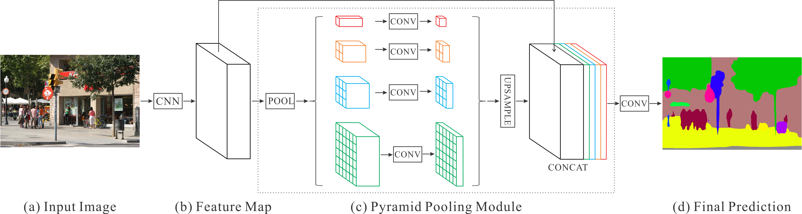
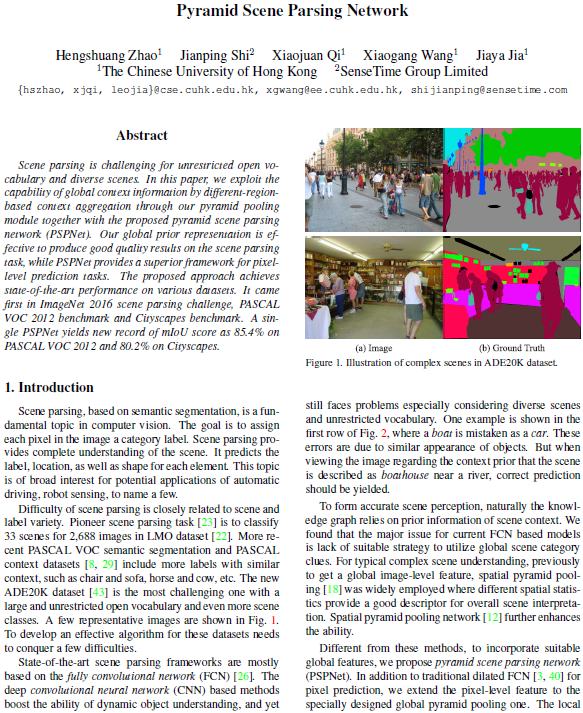
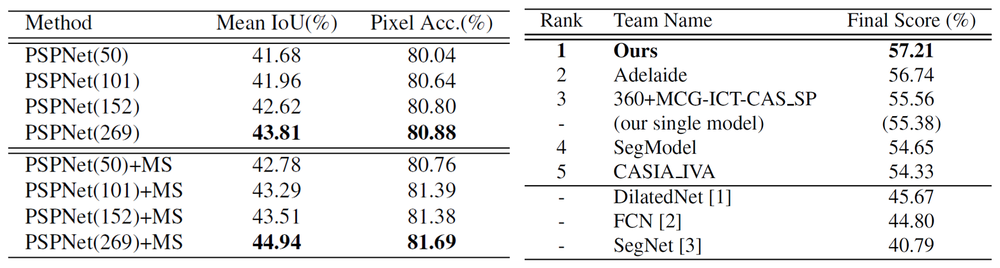
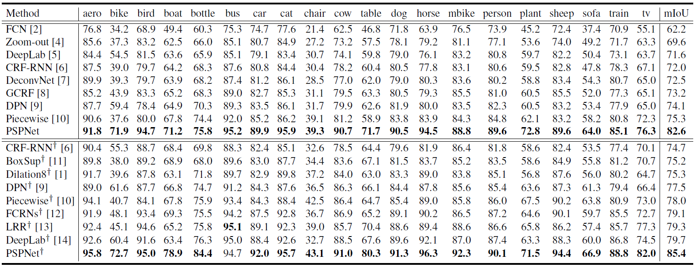
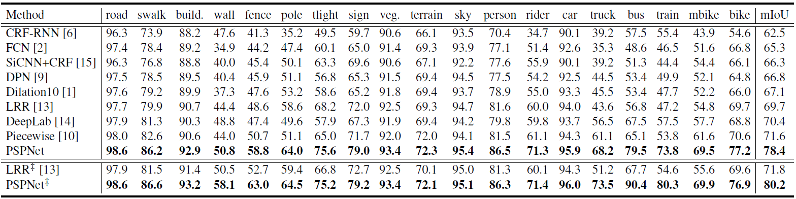
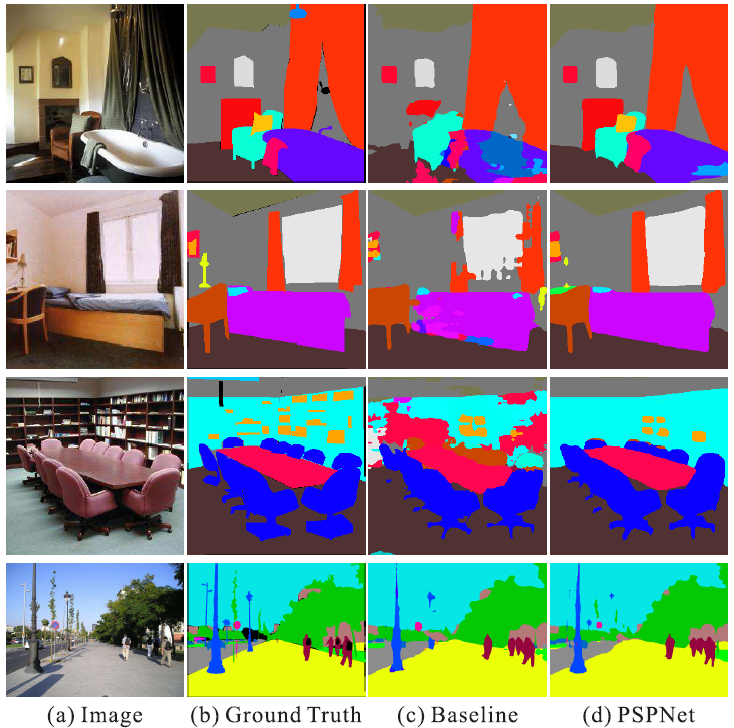
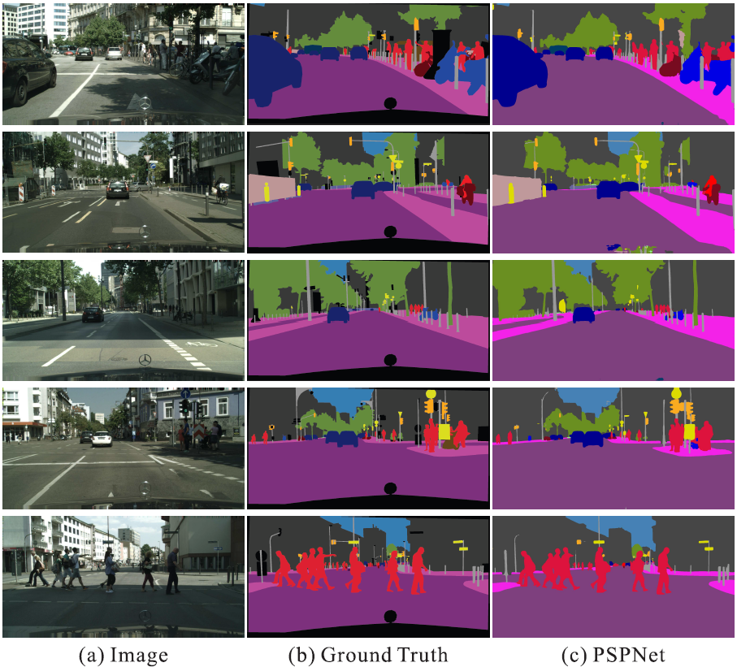

Hengshuang Zhao 1 Jianping Shi 2 Xiaojuan Qi 1 Xiaogang Wang 1 Jiaya Jia 1
1 The Chinese Univeristy of Hong Kong 2 Sensetime Group Limited
|  |
Figure 1. Overview of our proposed PSPNet. Given an input image (a), we first use CNN to get the feature map of the last convolutional layer (b), then a pyramid parsing module is applied to harvest different sub-region representations, followed by upsampling and concatenation layers to form the final feature representation, which carries both local and global context information in (c). Finally, the representation is fed into a convolution layer to get the final per-pixel prediction (d). |
Abstract
Scene parsing is challenging for unrestricted open vocabulary and diverse scenes. In this paper, we exploit the capability of global context information by different-region-based context aggregation through our pyramid pooling module together with the proposed pyramid scene parsing network (PSPNet). Our global prior representation is effective to produce good quality results on the scene parsing task, while PSPNet provides a superior framework for pixel-level prediction tasks. The proposed approach achieves state-of-the-art performance on various datasets. It came first in ImageNet 2016 scene parsing challenge, PASCAL VOC 2012 benchmark and Cityscapes benchmark. A single PSPNet yields the new record of mIoU accuracy 85.4% on PASCAL VOC 2012 and accuracy 80.2% on Cityscapes.
Downloads
|  | "Pyramid Scene Parsing Network" Hengshuang Zhao, Jianping Shi, Xiaojuan Qi, Xiaogang Wang, Jiaya Jia. IEEE Conference on Computer Vision and Pattern Recognition (CVPR), 2017 Ranked [Paper] |
Performance
|  |
Table 1. Left: PSPNet performance on ADE20K validation set. Number in the brackets refers to the depth of pre-trained ResNet and ‘MS’ denotes multi-scale testing. Right: Results of ImageNet 2016 scene parsing challenge. The best entry of each team is listed. The final score is the mean of Mean IoU and Pixel Acc. Results are evaluated on the testing set. |
|  |
Table 2. Per-class results on PASCAL VOC 2012 testing set. Methods pre-trained on MS-COCO are marked with '†'. |
|  |
Table 3. Per-class results on Cityscapes testing set. Methods trained using both fine and coarse set are marked with '‡'. |
Results
|  |
Figure 2. Visual improvements on ADE20K. |
 |
Figure 3. Visual improvements on PASCAL VOC 2012 data. |
|  |
Figure 4. Examples of PSPNet results on Cityscapes dataset. |
Video
Demo video processed by PSPNet101 on cityscapes dataset:
References
[1] F. Yu and V. Koltun. Multi-scale context aggregation by dilated convolutions. arXiv:1511.07122, 2015.
[2] J. Long, E. Shelhamer, and T. Darrell. Fully convolutional networks for semantic segmentation. In CVPR, 2015.
[3] V. Badrinarayanan, A. Kendall, and R. Cipolla. Segnet: A deep convolutional encoder-decoder architecture for image segmentation. arXiv:1511.00561, 2015.
[4] M. Mostajabi, P. Yadollahpour, and G. Shakhnarovich. Feedforward semantic segmentation with zoom-out features. In CVPR, 2015.
[5] L. Chen, G. Papandreou, I. Kokkinos, K. Murphy, and A. L. Yuille. Semantic image segmentation with deep convolutional nets and fully connected crfs. arXiv:1412.7062, 2014.
[6] S. Zheng, S. Jayasumana, B. Romera-Paredes, V. Vineet, Z. Su, D. Du, C. Huang, and P. H. S. Torr. Conditional random fields as recurrent neural networks. In ICCV, 2015.
[7] H. Noh, S. Hong, and B. Han. Learning deconvolution network for semantic segmentation. In ICCV, 2015.
[8] R. Vemulapalli, O. Tuzel, M.-Y. Liu, and R. Chellappa. Gaussian conditional random field network for semantic segmentation. In CVPR, 2016.
[9] Z. Liu, X. Li, P. Luo, C. C. Loy, and X. Tang. Semantic image segmentation via deep parsing network. In ICCV, 2015.
[10] G. Lin, C. Shen, I. D. Reid, and A. van den Hengel. Efficient piecewise training of deep structured models for semantic segmentation. In CVPR, 2016.
[11] J. Dai, K. He, and J. Sun. Boxsup: Exploiting bounding boxes to supervise convolutional networks for semantic segmentation. In ICCV, 2015.
[12] Z. Wu, C. Shen, and A. van den Hengel. Bridging category-level and instance-level semantic image segmentation. arXiv:1605.06885, 2016.
[13] G. Ghiasi and C. C. Fowlkes. Laplacian pyramid reconstruction and refinement for semantic segmentation. In ECCV, 2016.
[14] L. Chen, G. Papandreou, I. Kokkinos, K. Murphy, and A. L. Yuille. Deeplab: Semantic image segmentation with deep convolutional nets, atrous convolution, and fully connected crfs. arXiv:1606.00915, 2016.
[15] I. Kreso, D. Causevic, J. Krapac, and S. Segvic. Convolutional scale invariance for semantic segmentation. In GCPR, 2016.
Last update: April. 24, 2017